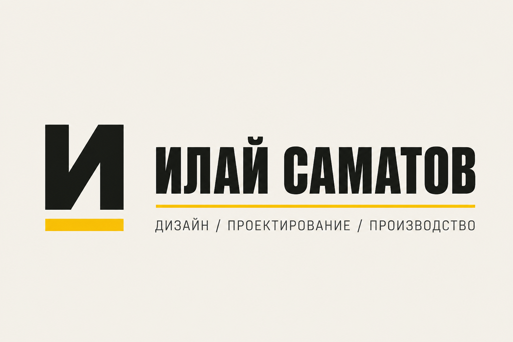

1 · Знак (прозрачный) — logo-mark.svg
Для шапки сайта и светлого фона
2 · Знак на креме — logo-mark-on-cream.svg
Как фавикон / плитка
3 · Горизонтальный логотип — logo-horizontal.svg
Основной lockup: знак + имя + жёлтая линия + слоган
4 · На тёмном — logo-horizontal-ink.svg
Для фото / тёмных подложек
5 · Стековый — logo-stacked.svg
Визитка, аватар, обложка
6 · Растровый превью (из знака)

logo-horizontal-preview.png — референс композиции